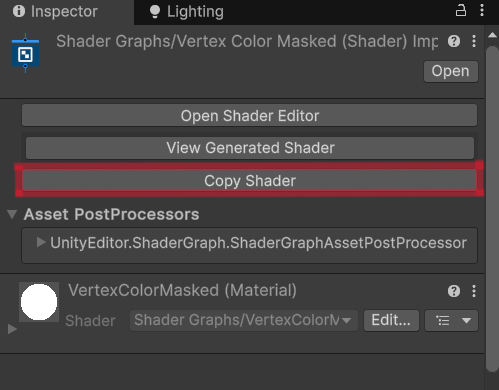

Simple See Through Shaders for Unity3d
Thank you for using the Simple See Through Shaders for Unity3d URP.
How to use:
To create the see through effect you will need at least 2 objects:
- the object that should be rendered invisible by the mask
- the mask object
The effect uses two shaders: mask and maskable. The Materials>Exemples folder contains 6 simple maskable shaders created with shader graph and then turned maskable. (see "mask any shader section")
Mask any shader
Shader Graph
While Shader Graph does not supports stencil commands we can still make shaders created with it interact with our mask.
To do that we must turn the graph into a shader file:
- Select the ShaderGraph file, and in the inspector click "copy code"
- In you project create a shader: right click -> create -> shader -> new standard surface shader and name it how you want
- Paste the copied shader graph code over the shader file template code (keep the top line containing the name you chose)
- Delete the shader graph name

Contact
For support:
email:
rascarcapackdev@gmail.com
I'm Etienne Pouvreau, a developer from france, I make games and game assets.